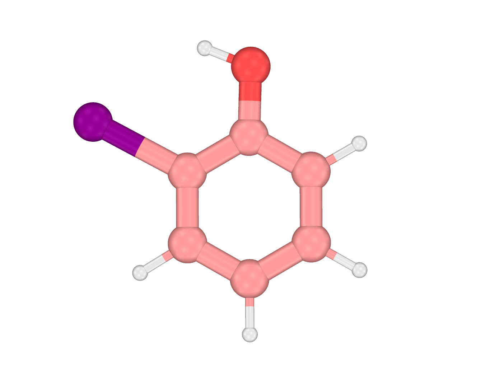
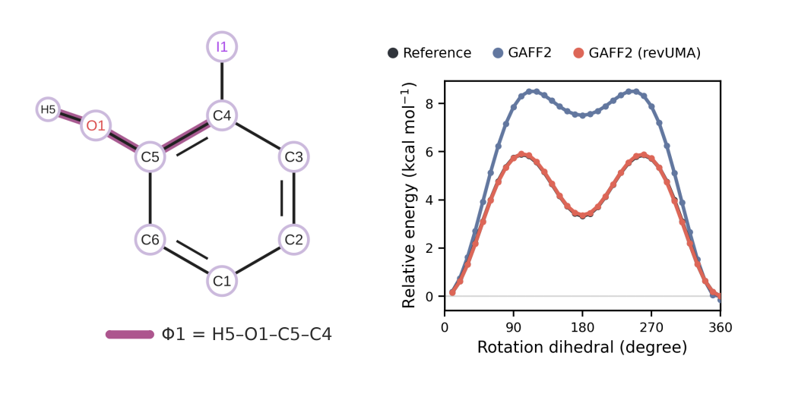
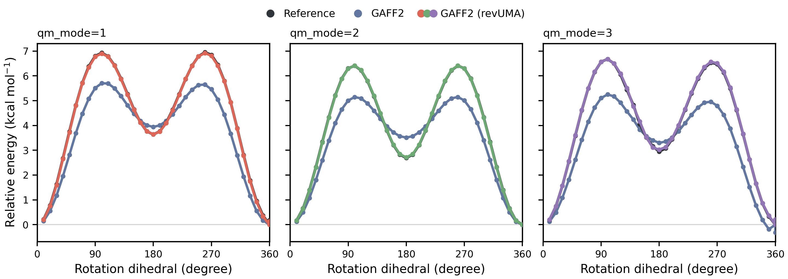

CORR Tutorial
Overview
This tutorial walks through the CORR route of parmfit(method=corr) in four runs on o-iodophenol (choi001), a FreeSolv hydration-benchmark solute, supplied as the GAFF2 (General AMBER Force Field)-typed choi001_gaff2.mol2. Case 1 refines bonded terms and torsions with every default; Case 2 derives RESP (restrained electrostatic potential) charges and adds a Gaussian reference; Case 3 walks the TorsionFit QM (quantum-mechanical) modes 2 and 3 (CORR3, CORR4). The iodine also exercises a detail that light molecules never hit: Gaussian's built-in Merz–Kollman radius table has no fifth-row entries, and you will see exactly how ParmFit supplies them. Every excerpt below is taken from verified runs of the inputs shown here (CORR1–4.inp plus their sidecar configs).

Every run writes a <base>.parmfitrun.in file next to the output that echoes your configuration with defaults filled in; use it to confirm what ParmFit actually consumed, and watch the log for Unknown left-hand warnings, which flag keys no builder consumed. The reference definition of every key lives in the CORR manual page and the shared sections of the ParmFit hub; software and input requirements are summarized in the hub's Requirements section.
Case 1 — Everything by default
Goal. Refine the bonded terms and torsions of a small molecule that already has a GAFF2 mol2, keeping its original charges. This is entirely default behavior: chg_fit=none, bonded=mseminario, torsionfit=true.
Input. The inline coordinates are the working geometry; the mol2 file supplies topology, atom types, and charges, and the single key lives in the sidecar:
#model=uma(size=uma-s-1p1,task=omol)
#parmfit(method=correction,input=CORR1.in)
#device=gpu0
I 3.540000 1.420000 0.000000
C 3.556000 1.479000 -2.088000
...CORR1.in
# Correction route settings; declare method=correction in #parmfit(...) and reference this file via input=
# Only non-default entries are listed; the generated parmfitrun.in shows every resolved value.
mol2=choi001_gaff2.mol2What happens.
- Initial parameters.
parmchk2 -s gaff2 -a YbuildsCORR1_work/CORR1_original.frcmodfrom the input mol2. - Optimization. The MLIP (machine-learned interatomic potential; LBFGS) relaxes the inline coordinates.
- Bonded refinement. An MLIP Cartesian Hessian feeds mSeminario, which updates the bonded terms — including the GAFF2
i-cabond to the iodine, whose force constant is revised substantially (see the table below). - Charges.
chg_fit=nonekeeps the input mol2 charges; nochargefit/directory is created. - TorsionFit. Auto-selection finds exactly one rotatable torsion — the exocyclic phenol C–O bond
(11, 12), whose rotation swings the hydroxyl over the ortho-iodine; ring torsions are excluded. It is scanned at 10°×36 points and fitted in two stages. The parmchk2 impropers pass the default penalty gate (p_thresh=30), so no improper refit runs. - Export. Amber mol2/frcmod/tleap input and GROMACS top/gro files are written.
The resolved configuration. Next to CORR1.out, MAPLE writes CORR1.parmfitrun.in. For this case almost every entry is a filled-in default:
# parmfitrun.in - resolved parmfit configuration for method=correction
# Generated by MAPLE parmfit; values are the user config entries with defaults filled in.
# This file is itself a valid parmfit config and can be referenced via input=.
# correction run
# input mol2 with GAFF2 atom types
mol2 = choi001_gaff2.mol2
# (mseminario, seminario, none)
bonded = mseminario
# frequency scaling for Seminario constants
vib_scale = 1.0
# QM reference
# run QM reference geometry and Hessian jobs
iqm = false
# (g16, g09, gaussian, orca)
qm_engine = g16
... (open the real file after a run to see every resolved key)Reading the output. The setup header confirms what was consumed — check the QM reference and torsion lines before reading anything else:
======================================================================
Parmfit Correction Setup
======================================================================
Input mol2: choi001_gaff2.mol2
Initial frcmod: CORR1_work/CORR1_original.frcmod
Topology atoms: 13
Topology bonds: 13
Bonded refinement: mSeminario
QM reference: disabled
QM compare: disabled
TorsionFit: enabled
Torsion backend: cgbs
Torsion constraint:projected
Torsion ensemble:false
Scan grid: 10.0000 deg x 36 steps
Stage2 refine: max_fast_cycles=3, max_iter_per_cycle=256, tol=1e-06
Torsion bonds: auto-select non-ring torsion bonds with proper torsions
Assigned terms:
bonds: 13 (unmatched: 0)
angles: 19 (unmatched: 0)
dihedrals: 26 (unmatched: 0)
impropers: 6 (unmatched: 0)
nonbonds: 13 (unmatched: 0)The stage trace shows the pipeline order. With chg_fit=none there is deliberately no charge-fitting stage, and no improper refit was triggered:
[Correction] initial parameter assignment ...
[Correction] MLIP geometry optimization ...
[Correction] MLIP Hessian + mSeminario ...
[Correction] TorsionFit ...
[Correction] export GROMACS ...
[Correction] export Amber ...The mSeminario table lists only changed terms, with the old values on the left of | and the new values on the right — the iodine terms first:
(1,2) i-ca k=234.900000 r=2.129000 | k=135.307826 r=2.089184
(2,3) ca-ca k=461.100000 r=1.398000 | k=387.211126 r=1.386447
(1,2,3) i-ca-ca k=57.500000 theta=119.1100 | k=43.159181 theta=119.2977
(1,2,11) i-ca-ca k=57.500000 theta=119.1100 | k=42.841349 theta=119.8516
...The torsion energy trace ends with the number to watch — the MAE (mean absolute error)/RMSE (root-mean-square error) of the fitted profile against the MLIP reference. The rotor profile itself is informative: two planar wells (one over the iodine side) separated by twin perpendicular barriers of nearly 6 kcal/mol:
Torsion energy trace:
torsion bond (11, 12):
scan xyz: CORR1_work/torsionfit/CORR1_torsionfit_11-12_scan_final.xyz
angle_deg MLIP_ref orig_ref stage0_ref stage1_ref stage2_ref
359.9226 0.000000 0.000000 0.000000 0.000000 0.000000
369.9226 0.159524 0.185740 0.198823 0.154343 0.159719
389.9226 1.331669 1.618097 1.693869 1.273449 1.316369
419.9226 3.992471 5.133502 5.326029 3.919965 3.982378
459.9226 5.892447 8.307398 8.560909 5.939417 5.911643
539.9226 3.331109 7.509462 7.699650 3.483694 3.367189
...
MLIP_ref vs stage2_final: MAE = 0.016114 kcal/mol, RMSE = 0.019326 kcal/mol
Finally, the result block lists the products and the parameter-change counts:
======================================================================
PARMFIT CORRECTION RESULT
======================================================================
Status: completed
Input mol2: choi001_gaff2.mol2
Main products:
Amber mol2: CORR1_work/CORR1_maple.mol2
Amber frcmod: CORR1_work/CORR1_maple.frcmod
GROMACS top: CORR1_work/CORR1_maple.top
GROMACS gro: CORR1_work/CORR1_maple.gro
Amber tleap: CORR1_work/CORR1_maple_tleap.in
Stage timing:
Hessian + mSeminario 7s
geometry optimization 2s
TorsionFit 0s
initial parameter assignment 0s
export Amber 0s
export GROMACS 0s
charge fitting 0s
Parameter changes:
bonded refinement: mSeminario
bonds changed by bonded refine: 13
angles changed by bonded refine: 19
dihedrals changed by TorsionFit: 2
other changes: none
TorsionFit:
state: enabled
torsion bonds: (11, 12)
scan files:
(11, 12): CORR1_work/torsionfit/CORR1_torsionfit_11-12_scan_final.xyz
stage1: completed
stage2: enabled, max_fast_cycles=3
fast cycles: executed=2, accepted=1, rejected=1
final parameters: Stage2 fast cycle 1
Warnings:
noneThe log closes with a reminder that topologies built from custom atom types need a parmed pass before SHAKE can work — the exact commands are in the hub's parmed note:
======================================================================
IMPORTANT
======================================================================
Due to the limitations of custom atom types, the exported topology
must be normalized with ParmEd before use. tleap identifies hydrogens
by the leading character of the atom type, which MAPLE types do not
carry, so it writes an empty BONDS_INC_HYDROGEN section and SHAKE
(ntc=2) would constrain nothing. ParmEd rebuilds that section from
ATOMIC_NUMBER, e.g.:
tleap -f CORR1_maple_tleap.in
parmed -p CORR1_maple_gas.prmtop <<< $'outparm CORR1_maple_gas_parmed.prmtop\nquit'
======================================================================Case 2 — Adding RESP charges and a QM reference
What changed. Four keys join the sidecar: chg_fit=resp derives charges at runtime — Gaussian evaluates the ESP (electrostatic potential), then AmberTools performs the two-stage RESP fit — and iqm=true with opt_level=B3LYP/def2SVP moves the geometry and Hessian references to Gaussian. The default qm_mode=1 keeps the MLIP-driven torsion scan with QM single points at each frame.
One level choice is iodine-specific: the classic RESP basis HF/6-31G(d) does not exist for iodine, so chg_level moves to HF/def2SVP — the def2 family carries iodine with its effective core potential. Note also the level spelling: qm_engine=g16 wants B3LYP/def2SVP without the hyphen — the engine-spelling rule is documented in the hub's Levels of Theory.
#model=uma(size=uma-s-1p1,task=omol)
#parmfit(method=correction,input=CORR2.in)
#device=gpu0
I 3.540000 1.420000 0.000000
...CORR2.in
# Correction route settings; declare method=correction in #parmfit(...) and reference this file via input=
# Only non-default entries are listed; the generated parmfitrun.in shows every resolved value.
mol2=choi001_gaff2.mol2
# Runtime charge derivation: Gaussian ESP + AmberTools two-stage RESP
# (def2SVP instead of the classic HF/6-31G(d): iodine has no 6-31G basis;
# the def2 family carries iodine with its ECP)
chg_fit=resp
chg_level=HF/def2SVP
# QM reference, qm_mode 1: MLIP drives the scan, QM single point per frame
iqm=true
opt_level=B3LYP/def2SVPWhat happens. The MLIP pre-optimization still runs, then a QM opt+frequency job supersedes it as the reference geometry and Hessian source for mSeminario. Charge derivation runs regardless of iqm — Gaussian supplies the ESP, AmberTools performs the RESP stages; the Gaussian jobs run with the configured qm_nproc/qm_mem.
The iodine radius detail. Open CORR2_work/chargefit/resp.gjf and the route line is not the plain Pop=MK you may know from light molecules:
#P HF/def2SVP Pop(MK,ReadRadii) IOp(6/33=2) SCF=Tight
... (molecule specification)
I 1.875Gaussian's built-in Merz–Kollman radius table stops well before the fifth row, and l602 aborts with GetVDW: no radius for atomic number 53 otherwise. ParmFit therefore writes Pop(MK,ReadRadii) and appends one radius line per element the built-in table lacks — here the UFF van der Waals radius of iodine divided by 1.2 (2.25/1.2 = 1.875), the same fallback convention used by Multiwfn and MRCC. Light molecules never see this; molecules containing iodine cannot run without it.
The setup header and stage trace show both additions:
QM reference: enabled, mode=1, engine=g16, opt=B3LYP/def2SVP, sp=B3LYP/def2SVP
...
[Correction] initial parameter assignment ...
[Correction] MLIP geometry optimization ...
[Correction] QM reference optimization ...
[Correction] QM Hessian + mSeminario ...
[Correction] atomic charge fitting ...
[Correction] TorsionFit ...
[Correction] Using QM reference data for TorsionFit (mode=1) ...
[Correction] export GROMACS ...
[Correction] export Amber ...The result block gains a Charge fitting: section:
Charge fitting:
method: resp
RESP level: HF/def2SVP
target charge: 0
actual charge: -0.00000000
work MOL2: CORR2_work/chargefit/qm_route_charged.mol2
final MOL2: CORR2_work/CORR2_maple.mol2
Stage timing:
TorsionFit 5m 23s
Hessian + mSeminario 1m 29s
charge fitting 4s
geometry optimization 2sThe torsion trace now references QM single points — the reference column becomes QM_ref and the scan file is prefixed qm_:
torsion bond (11, 12):
scan xyz: CORR2_work/torsionfit/CORR2_qm_torsionfit_11-12_scan_final.xyz
angle_deg QM_ref orig_ref stage0_ref stage1_ref stage2_ref
359.9837 0.000000 0.000000 0.000000 0.000000 0.000000
369.9837 0.208213 0.148268 0.159940 0.197624 0.197976
389.9837 1.623683 1.167627 1.280879 1.590847 1.591518
...
QM_ref vs stage2_final: MAE = 0.018492 kcal/mol, RMSE = 0.021605 kcal/molThe stage0/stage1/stage2 columns are the fitted MM (molecular-mechanics) profile after each fitting stage; what matters is that the last column tracks the QM reference over the whole profile — not the bookkeeping of which stage ended up final.
Checkpoint
Compare target charge: with actual charge: — CORR never rescales fitted charges, so a mismatch is reported, not hidden (here 0 vs −0.00000000).
Case 3 — Choosing the scan's QM reference
What changed. The configuration lives in the external sidecar files referenced with input= — the method itself stays in the inline #parmfit(...) header. Case 2 kept the default qm_mode=1, in which QM single-points score the MLIP scan’s frames; this case makes the choice explicit, running CORR with qm_mode=2 and qm_mode=3. The CORR4 header declares level=tight: mode 3 hands the frame relaxation to ParmFit’s own optimizer, and level is MAPLE’s global convergence tier, so the run raises that optimizer’s stopping criteria from the default medium tier to tight — the same depth g16’s own optimizer stops at.
Input.
#model=uma(size=uma-s-1p1,task=omol)
#parmfit(method=correction,input=CORR3.in)
#device=gpu0
I 3.540000 1.420000 0.000000
...External config. Paths such as mol2 are resolved relative to this file.
CORR3.in
mol2=choi001_gaff2.mol2
# Runtime charge derivation: Gaussian ESP + AmberTools two-stage RESP
# (def2SVP instead of the classic HF/6-31G(d): iodine has no 6-31G basis;
# the def2 family carries iodine with its ECP)
chg_fit=resp
chg_level=HF/def2SVP
# QM reference, qm_mode 2: MLIP pre-optimization, QM constrained opt per frame
iqm=true
qm_mode=2
opt_level=B3LYP/def2SVPCORR4 header. The convergence tier lives in the inline header:
#model=uma(size=uma-s-1p1,task=omol)
#parmfit(method=correction,input=CORR4.in,level=tight)
#device=gpu0What happens. The charge and reference setup is identical to Case 2; only the way QM data enters TorsionFit changes. In mode 2, each scan frame is a QM constrained optimization of the torsion; in mode 3, the QM engine evaluates energies and forces directly and MAPLE's own optimizer drives the scan — see the hub's qm_mode table for the full semantics. The header and stage line always report the active mode:
QM reference: enabled, mode=2, engine=g16, opt=B3LYP/def2SVP, sp=B3LYP/def2SVP
[Correction] Using QM reference data for TorsionFit (mode=2) ...The three verified runs of this molecule compare like this:
CORR2 (mode 1) CORR3 (mode 2) CORR4 (mode 3)
scan xyz: CORR2_qm_torsionfit_11-12_scan_final.xyz
CORR3_qm_torsionfit_11-12_scan_final.xyz
CORR4_mode3_qm_torsionfit_11-12_scan_final.xyz
frame relaxation: MLIP scan (medium) g16 Opt (defaults) built-in opt (tight)
Gaussian outputs in _work: 39 39 1006
torsion MAE (kcal/mol): 0.018492 0.010873 0.025352
TOTAL RUN TIME: 7m 11s 27m 50s 1h 36m 13s
The same B3LYP potential-energy surface and the same frozen dihedral underlie all three references — what differs is who relaxes each frame and where the relaxation stops. The rotor couples to the framework — the C–O bond breathes with conjugation, and the framework angles and the I···O contact absorb the steric load of the hydroxyl swinging past the iodine — so relaxed and unrelaxed frames are genuinely different geometries. Mode 1 scores the MLIP scan’s geometries as they are; modes 2 and 3 relax every frame on the QM surface, and with mode 3’s depth set by level=tight the two relaxed scans stop at the same depth. That is why the three profiles in Fig. 3 differ, and depth is what separates the run times in the table above.
The Gaussian-output totals in the table are job counts, not gradient-evaluation counts: mode 2 submits one Opt=ModRedundant constrained optimization per frame, while mode 3 submits single Force evaluations as ParmFit’s optimizer walks each frame — the tighter the level, the more of them.
Checkpoint
Pick the mode by what stands behind the reference and what it costs: mode 1 reuses the MLIP scan at single-point cost, mode 2 replaces each frame with a complete constrained QM optimization, mode 3 hands the scan steps to QM at single-force cost — raise its depth with level=tight as here, or accept the default medium tier and its shallower frames. Every product path above is relative to the run’s <base>_work/ directory.
Where to Go Next
- CORR manual — parameter reference, output files, and limits.
- ChargeFit, QM reference, and TorsionFit on the ParmFit hub — the stages these routes share, documented once on the hub.
- NCAA (noncanonical amino acid) tutorial and MetalAA tutorial — simple worked examples for the PDB (Protein Data Bank) routes.
- Run archive. All inputs, configs, logs, and work-directory products behind every excerpt on this page are deposited at Zenodo: 10.5281/zenodo.23126271.